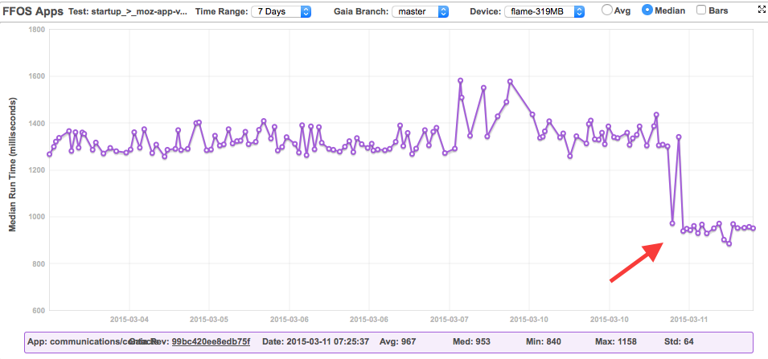

One of the biggest challenges that we have in Firefox OS is the performance. We have been fighting it since day one and by applying some different techniques we managed to get to a point where we have some very decent application start-up time numbers.
The last application to get a considerable performance boost has been the Contacts application.
During the last few weeks, the Contacts team has been working on a patch that finally landed on master yesterday. The result is an improvement of around 720 milliseconds of perceived start-up time, which means that we saved almost 50% of the previous start-up time.
Datazilla already shows the change.

Comparing the results of running the Gaia performance tests with a heavy workload before and after the patch we get the following numbers:
| communications/contacts (means in ms) | Base | Patch | Δ |
|---|---|---|---|
| moz-chrome-dom-loaded | 1147 | 585 | -562 |
| moz-chrome-interactive | 1267 | 1393 | 126 |
| moz-app-visually-complete | 1601 | 874 | -727 |
| moz-content-interactive | 2131 | 1393 | -738 |
| moz-app-loaded | 10942 | 10409 | -533 |
As you can see we are sending the moz-app-visually-complete event ~727 milliseconds earlier than before. This is the event that we use to indicate that the application appears visually ready for user interaction and the one that we really want to send as soon as possible. We also get similar improvements for the moz-chrome-dom-loaded, moz-content-interactive and moz-app-loaded events. You can also notice that we had to make some trade offs and we lost some ground with the moz-chrome-interactive event. If you look closer, you will see that chrome and content are marked as interactive at the same time. This was not happening before. We were not able to interact with the application content until almost one second after being able to interact with the application chrome. Now we have everything ready at once ~700 milliseconds before and given that the most important part of the Contacts application is the contacts data itself, we consider that the small lost in the moz-chrome-interactive event is worth the result. You can check the MDN responsiveness guidelines page for more details about these events.
I recorded a quick video comparing the previous situation (left) with the current one (right). (Apologies for the low quality of the recording).
How did we get there
The target was to have some usable UI ready as soon as possible before the browser painted anything on the screen. For us, this usable UI is the application chrome with the Add contact and Settings options and the first chunk of contacts, including favorite and ICE contacts.
So far we were not doing bad showing the application chrome, but we were taking extra time to load the first group of visible contacts. To show this first content we needed to do a request to the MozContacts API to obtain the list of stored contacts and start appending to the DOM one new node per each contact information retrieved. The thing is that the result of this request rarely changed from one execution to the other. So why not caching it?
We followed the same approach that the Email team already applied on the Email application for caching the email list. We used localStorage to save the result of getting the contacts list from the MozContacts API and rendering the first chunk of contacts. To avoid having to do object serialization and parsing before and after accessing the localStorage item, we initially tried storing the whole outerHTML string of the contacts groups container holding the first chunk of contacts and applying it via innerHTML, but that did not give good enough performance and it made the logic for managing the contacts cache harder. Also, in the end we figured out that we needed to store other information like the language direction or the cache date along with the HTML to decide wether the cache was valid or not, so object serialization and parsing was required in any case. Instead of that, we ended up storing an object with this information to ease the cache eviction decision and enough information to rebuild the DOM containing the first chunk of contacts. We applied this data to the DOM via documentFragment. You can checkout the code for building and applying the cache.
The trickiest part of maintaining this cache is the eviction policy. We need to evict and rebuild the cache every time a contact is changed (added, removed or edited) and because this can happen from inside and from outside of the Contacts app (even when the app is closed), we need to be specially careful and verify the cache after applying it to the DOM without affecting the performance or causing visual reflows. You can follow this code to see how we managed to do that. Other scenarios where we need to evict the cache are language direction changes, ICE contacts changes, favorite contacts modifications and when the user changes the way the contacts are displayed (by first or last name).
Apart from building the cache mechanism we also changed the application bootstrap process in a way that we only load the minimum set of scripts required to get the cached information from localStorage and to apply it in the DOM. Once we have this process completed, we load the rest of the application Javascript that is required to continue the rest of the boot process. You can see this logic in the new bootstrap script.
Next steps
We want to keep improving the performance of the Contacts application. The next thing that we want to target is improving the loading of the contacts thumbnails. In fact, Francisco Jordano has already started working on it and there are already some visible improvements.
We also want to experiment with caching most part or even the whole contacts list in different chunks to allow the user to use the alpha scrolling and to get a fully loaded application even sooner.
Finally, the Gaia team is starting to play around with Service Workers and with the idea of using this new feature to cache already rendered views in a similar way that we did for Contacts. I cannot wait to see more progress on this area :)